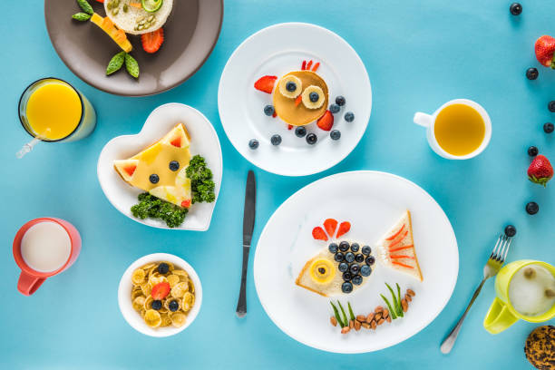

Reeducação alimentar infantil
Reeducação alimentar infantil é um processo que envolve a mudança de hábitos, planejamento de um cardápio saudável em conjunto com um nutricionista e a adoção de estratégias para estimular o apetite das crianças. É importante que os preparos sejam atrativos, saudáveis e saborosos ao mesmo tempo.
O primeiro passo para iniciar um programa de reeducação alimentar infantil é consultar um nutricionista, que irá orientar sobre as mudanças necessárias no cardápio a longo prazo. É essencial lembrar que a alimentação infantil não deve ser radical, mas sim completa e preferencialmente composta por alimentos naturais.
A seguir, apresentaremos algumas diretrizes para ajudar nesse processo:
- Introduza alimentos saudáveis desde cedo: Comece a oferecer uma variedade de frutas, legumes, grãos integrais e proteínas magras ao seu filho desde a introdução alimentar. Quanto mais cedo as crianças são expostas a alimentos saudáveis, mais propensas são a aceitá-los e incorporá-los em sua alimentação regular.
- Seja um exemplo: Os pais desempenham um papel fundamental na reeducação alimentar. Mostre aos seus filhos o quanto você aprecia alimentos saudáveis, faça refeições em família e evite comer alimentos não saudáveis na frente deles. Eles tendem a imitar o comportamento dos pais, então seja um modelo positivo de hábitos alimentares.
- Ofereça escolhas saudáveis: Crie um ambiente agradável durante as refeições, livre de distrações como celulares, televisão ou tablets. Converse com seu filho, faça perguntas sobre os alimentos que estão comendo e compartilhe histórias divertidas. Isso ajuda a tornar a alimentação um momento prazeroso e reforça a conexão emocional com os alimentos saudáveis.
- Envolva a criança na preparação das refeições: Incentive seu filho a ajudar na cozinha, seja na lavagem dos alimentos, mistura de ingredientes simples ou montagem de lanches saudáveis. Isso cria um senso de propriedade em relação à alimentação e aumenta a probabilidade de que ele experimente e aprecie os alimentos saudáveis que ajudou a preparar.
- Evite recompensas com alimentos: Evite utilizar alimentos não saudáveis como recompensa por bom comportamento ou realização de tarefas. Isso pode criar uma associação negativa com alimentos saudáveis e promover uma relação emocional prejudicial com a comida.
- Seja paciente e persistente: A reeducação alimentar é um processo gradual e leva tempo. É normal que as crianças resistam a experimentar novos alimentos ou recusem opções saudáveis em um primeiro momento. Seja persistente, ofereça uma variedade de alimentos saudáveis de maneira consistente e não desanime. Com o tempo, eles podem se acostumar e até mesmo desenvolver preferências por alimentos saudáveis.
Lembre-se de que cada criança é única e pode ter suas próprias preferências e desafios alimentares. Esteja aberto a adaptar as estratégias e buscar orientação de um profissional de saúde, como um nutricionista, se necessário. Com paciência, consistência e um ambiente alimentar positivo, é possível reeducar a alimentação de uma criança, promovendo hábitos saudáveis que irão beneficiá-la ao longo da vida.
